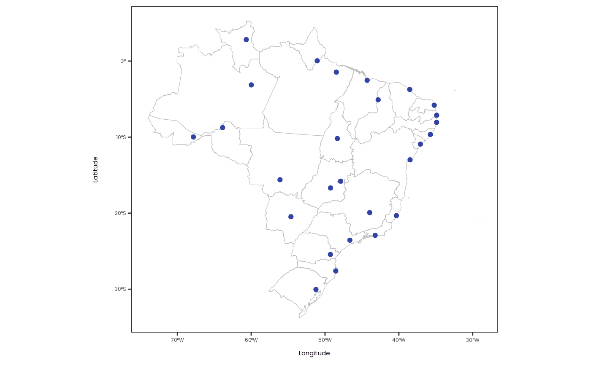
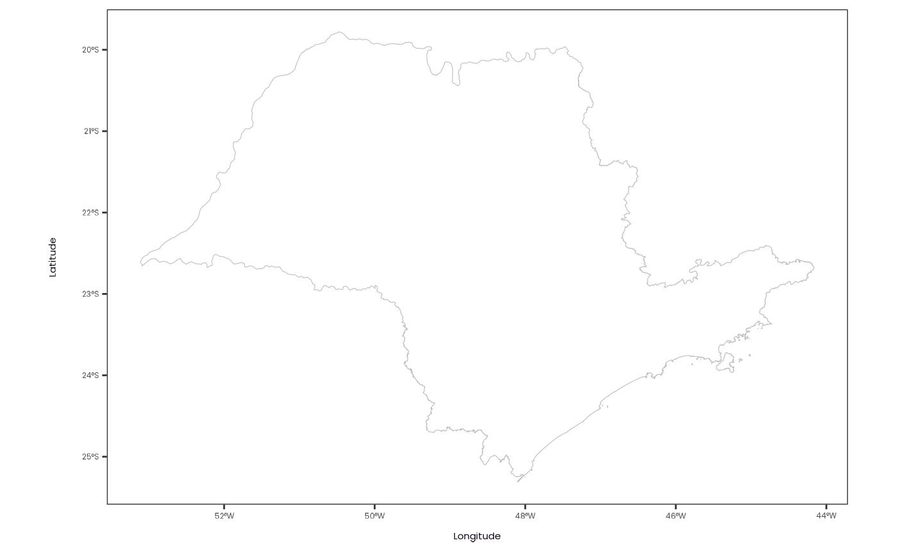
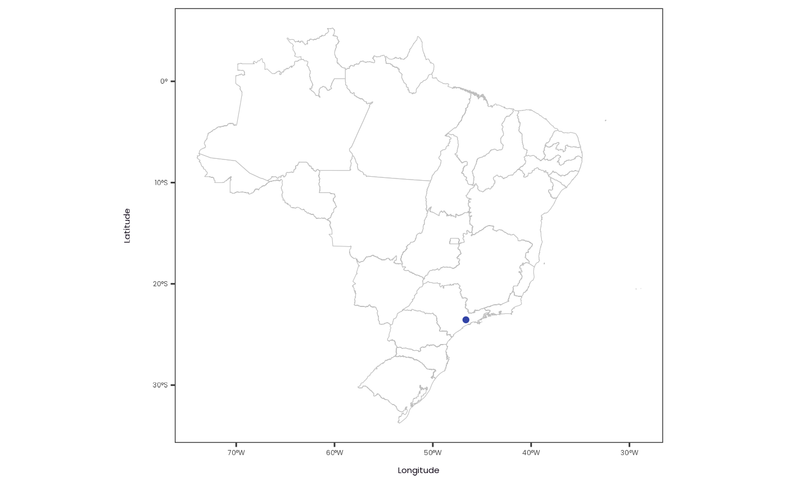

filter_points() filters latitude/longitude points that intersects
with a given sf geometry.
Note: This function requires the sf
package to be installed.
Value
A tibble with the filtered data points.
Examples
# Set the Environment -----
library(curl)
library(dplyr)
library(ggplot2)
library(geobr)
library(sf)
#> Linking to GEOS 3.12.1, GDAL 3.8.4, PROJ 9.4.0; sf_use_s2() is TRUE
plot_geometry <- function(geometry) {
plot <-
geometry |>
ggplot() +
geom_sf(
color = "gray75",
fill = "white",
inherit.aes = FALSE
) +
labs(x = "Longitude", y = "Latitude")
print(plot)
}
plot_points <- function(data, geometry) {
plot <-
data |>
ggplot(aes(x = longitude, y = latitude)) +
geom_sf(
data = geometry,
color = "gray75",
fill = "white",
inherit.aes = FALSE
) +
geom_point(color = "#3243A6") +
labs(x = "Longitude", y = "Latitude")
print(plot)
}
# Define the Points -----
# \dontrun{
if (has_internet() && test_geobr_connection()) {
data <- tibble(
latitude = brazil_state_latitude(),
longitude = brazil_state_longitude()
)
data
}
#> # A tibble: 27 × 2
#> latitude longitude
#> <dbl> <dbl>
#> 1 -9.98 -67.8
#> 2 -9.65 -35.7
#> 3 0.0402 -51.1
#> 4 -3.13 -60.0
#> 5 -13.0 -38.5
#> 6 -3.73 -38.5
#> # ℹ 21 more rows
# }
# Visualize the Points on a Map -----
# \dontrun{
if (has_internet() && test_geobr_connection()) {
brazil_states_geometry <- read_state()
data |> plot_points(brazil_states_geometry)
}
#> Using year/date 2010

# }
# Set the Geometry to Filter the Points -----
# \dontrun{
if (has_internet() && test_geobr_connection()) {
sp_state_geometry <- read_state(code = "SP")
sp_state_geometry |> plot_geometry()
}
#> Using year/date 2010

# }
# Filter the Points -----
# \dontrun{
data <- data |> filter_points(sp_state_geometry)
data
#> # A tibble: 1 × 2
#> latitude longitude
#> <dbl> <dbl>
#> 1 -23.6 -46.6
# }
# Visualize the Filtered Points -----
# \dontrun{
data |> plot_points(brazil_states_geometry)

# }